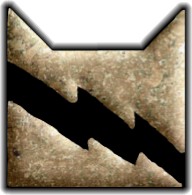

Introduction
Thunderclan is the main clan, becuase it is where the main character, Rusty, lives. One day, Rusty, a house cat, wanders into the woods, and gets the offer to live in the forest with the clan cats. He can choose to live with the clan, but it means he will have to leave his old life behind forever. Or, he can choose to stay at his house, and never return to the forest again. His final decision is to live with the clan. That one decision changes his life forever, as he plunges into adventure!
Thunderclan's symbol:

Thunderclan Characters
Bluestar

Breed: Blue-gray she-cat
Role: leader, Starclan resident
Mentor: Unknown
Apprentice: Firestar
Firestar

Breed: Orange tabby tom
Role: kittypet, apprentice, warrior, deputy, leader
Mentor: Bluestar
Apprentice: Cinderpelt, Cloudtail, Bramblepaw
Whitestorm

Breed: White tom
Role: Warrior, deputy, Starclan resident
Mentor: unknown
Apprentice: Sandstorm, Brightheart
Graystripe

Breed: Dark gray tom
Role: apprentice, warrior, deputy
Mentor: Lionheart
Apprentice: Brackenfur
Sandstorm

Breed: Pale ginger she-cat
Role: apprentice, warrior
Mentor: Whitestorm
Apprentice: None
Dustpelt

Breed: Dark brown tabby tom
Role: apprentice, warrior
Mentor: Redtail, Darkstripe
Apprentice: None
Ravenpaw

Breed: Black tom
Role: apprentice, loner
Mentor: Tigerclaw
Aprentice: None
Cloudtail

Breed: White tom
Role: kittypet, kit, apprentice, warrior
Mentor: Firestar
Apprentice: Brightheart (unofficially)
Yellowfang

Breed: Dark gray she-cat
Role: Rouge, medicine cat, Starclan resident
Mentor: unknown
Apprentice: Cinderpelt
(Former medicine cat from Shadowclan)
Cinderpelt

Breed: Dark gray she-cat
Role: kit, apprentice, medicine cat
Mentor: Fireheart, Yellowfang
Apprentice: None
More
Medicine cats
Spottedleaf
Deputies
Redtail, Lionheart, Whitestorm
Warriors
Longtail, Cloudtail, Brightheart, Mousefur, Brackenfur, Runningwind, Frostfur, Brindleface, Goldenlower, Cloudtail
Queens
Willowpelt
Apprentices
Fernpaw, Ashpaw, Tawnypaw, Bramblepaw, Swiftpaw, Thornpaw
Kits
Snowkit, Sootkit, Rainkit
Elders
One-eye, Halftail, Smallear, Patchpelt, Dappletail, Speckletail